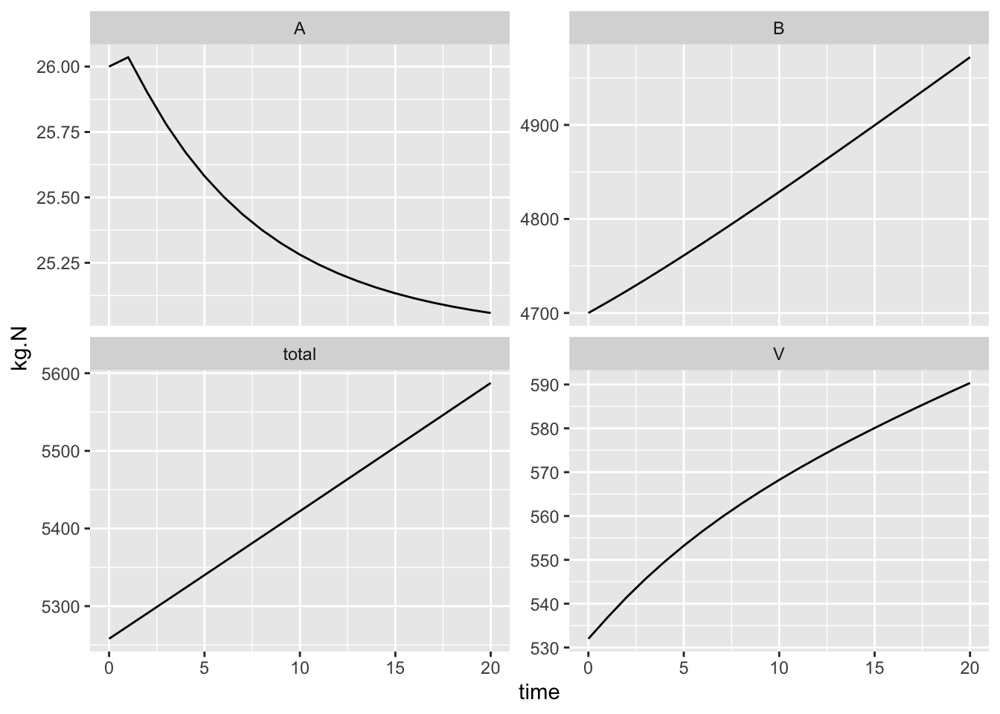

4 Lake Metabolism
In this chapter, you’ll study how lakes breath. You’ll get real data from Acton Lake, look it, and measure the rate of an inhale and an exhale. You’ll do that by hand, by hand with a spreadsheet, by hand with R, and finally using an R package, LakeMetabolizer, which is designed to do that and much more.
4.1 Estimating Productivity
Most cells respire to do the work of growth and maintenance by consuming oxygen and using it as the final electron acceptor when O\(_2\) is reduced, creating water. Because individuals comprise cells, and ecosystems comprise individuals, ecosystems respire too, and we can measure their metabolic rate using oxygen consumption and production.
We measure ecosystem metabolic rate as net primary productivity which is the difference between gross primary productivity and respiration. Putting all of this in the same units of oxygen allows us to measure the rate, \[NPP = GPP - R\] If we assume that water column oxygen is correlated with the rates of photosynthesis, respiration, and net primary production, then we can think of the slopes of oxygen concentration vs. time as rates of respiration and net primary production. If we assume that respiration is constant throughout the 24 h cycle, we calculate GPP as the sum of NPP and R.
4.2 By hand, in R
Let’s practice R by importing, wrangling, and graphing data, then calculating slopes and estimating respiration, NPP, and GPP.
Start by obtaining data for Acton Lake (acton.csv). Place it inside a folder labelled ‘data’ inside your working directory. Here you read in data and check whether it loaded properly.
## Either change the path name in this function, or
## make sure you have a folder named 'data' inside your working directory
acton <- read_csv("data/acton.csv",
## tell R the format of one of your variables
col_types = cols(date_time =
col_datetime(format = "%m/%d/%y %H:%M")),
skip = 1# skips the first line of metadata
)
summary(acton)## date_time cum_h O_mg.L
## Min. :2013-06-27 06:15:00 Min. : 0.00 Min. : 4.530
## 1st Qu.:2013-06-29 00:11:15 1st Qu.: 41.94 1st Qu.: 7.640
## Median :2013-06-30 18:07:30 Median : 83.88 Median : 8.365
## Mean :2013-06-30 18:07:30 Mean : 83.88 Mean : 8.607
## 3rd Qu.:2013-07-02 12:03:45 3rd Qu.:125.81 3rd Qu.: 9.582
## Max. :2013-07-04 06:00:00 Max. :167.75 Max. :12.700
## O_perc temp
## Min. : 56.3 Min. :24.60
## 1st Qu.: 96.4 1st Qu.:25.00
## Median :107.6 Median :26.10
## Mean :110.5 Mean :26.12
## 3rd Qu.:123.2 3rd Qu.:27.10
## Max. :167.1 Max. :28.10Let’s check our understanding of lake oxygen dynamics by plotting the time series. Ggplot understands what to do with dates.
ggplot(acton, aes(x=date_time, y=O_mg.L)) + geom_path() Figure 4.1: *Oxygen dynamics from Acton Lake.
If we want to calculate the slope of the night time oxygen concentration, then we should identify what the endpoints of “day time” are so that we can do analyses on just daylight or nighttime data.
Working with times in R is a little tricky, because times and dates, periods, durations, and intervals are inherently tricky. The date_time variable in the original data set contains all the information, and we extra tidbits from it.
# determine day/night intervals
## Sunrise
morning <- 6.25
## sunset
evening <- 21
acton <- mutate(acton,
date = as.factor( format(date_time, "%Y-%m-%d") ),
## hour decimal format
hour.d = as.integer( format(date_time, "%H")) +
as.numeric(format(date_time, "%M"))/60,
daytime.d =
ifelse(hour.d >= morning & hour.d < evening,
hour.d - morning, NA),
nighttime.d =
ifelse( hour.d >= evening, hour.d-evening,
ifelse(hour.d < morning,
24 - evening + hour.d, NA)),
daylight = as.factor(
ifelse(hour.d >= morning & hour.d < evening, "day", "night"))
)The slope of oxygen concentration at night is respiration, \(R\).
We will pull out one day’s worth of data and make a quick plot of the time series.
acton2 <- subset(acton, date_time > "2013-06-27 21:00:00" & date_time < "2013-06-28 06:15:00")
qplot(x = date_time, y=O_mg.L, data=acton2, geom = "path")Here is what each night looks like.
nights <- filter(acton, daylight=="night")
ggplot(nights, aes(x=nighttime.d, y=O_mg.L, colour=date)) +
geom_point() + # plot points
geom_smooth(method="lm", se=FALSE) # fit linear models each night
We can calculate the average slope for all nights, forcing a straight line through each night’s data. The estimates of uncertainty and the P values won’t make sense because the data are horribly autocorrelated, but we can rely on the estimates of the coefficients, and the average slope, in particular.
ntd <- acton$nighttime.d/24
m.resp <- lm(O_mg.L ~ nighttime.d + date, data=acton)
coef(m.resp)["nighttime.d"]## nighttime.d
## -0.2004875The estimate for night.d, -0.2, is our estimate of the respiration rate in mg_O\(_2\)/L per hour. We usually report this per day, which would just be 24 times as great, or -4.812 in mg_O\(_2\)/L/day.
If you would like you could perform similar analyses on a subset of the data.
# select the data frame, filter for 'date' values within a range of dates
acton2 <- acton %>% filter(date %in% c("2013-06-28", "2013-06-29") )
m.resp2 <- lm(O_mg.L ~ night.d + date, data=acton2)4.3 The LakeMetabolizer package
Here we do something similar but in a much more sophisticated way. To estimate the net ecosystem productivity, we need to know, at least, gas exchange rates, equilibrium oxygen saturation, the mixing depth, and the daylight hours.
The metab function in LakeMetabolizer calculates GPP, R, and NEP given requisite data. The function can use several different approaches, depending upon what data you have and your quantitative preferences. Here we use the simplest approach, which the authors refer to as simple bookkeeping. First we load the package and then examine the help page for metab.bookkeep.
# install.packages("LakeMetabolizer", dep=TRUE)
library(LakeMetabolizer)
?metab.bookkeepOn the help page you learn about how to use this function. Here we walk through the steps for acquiring or making educated guesses about the data we need.
## pick a reasonable gas exchange constant and mixing depth
k.gas <- 0.4
z.mix <- 1 # one meter
## code day and night with ones and zeroes
irr <- with(acton,{ifelse(daylight=="day", 1,0)})
## estimate dissolved oxygen at saturation (equilibrium)
## using the function, o2.at.sat.base()
acton <- acton %>% mutate(
do.sat=o2.at.sat.base(temp)
)
## create a data frame with just the variables we want.
acton.LM <- acton %>% # select data frame
mutate(z.mix = z.mix, k.gas = k.gas, irr=irr ) %>% # add 3 variables
## select only some of the columns
select(datetime=date_time,
do.obs=O_mg.L, do.sat=do.sat,
k.gas=k.gas, z.mix=z.mix, irr=irr) %>%
as.data.frame() # simplify the data structure (class tbl_df screws things up)Finally, we use metab(method="bookkeep") to estimate GPP, R, and NEP.
## calculate GPP, R, NEP in mg O2 / L / day
out <- metab(acton.LM, method="bookkeep")## [1] "Points removed due to incomplete day or duplicated time step: 96"
## [1] "NA's added to fill in time series: 0"out## year doy GPP R NEP
## 1 2013 179 6.345054 -4.786770 -0.2392476
## 2 2013 180 10.741236 -6.051379 2.4460696
## 3 2013 181 16.144515 -13.116955 -1.9112065
## 4 2013 182 6.824456 -5.527167 -0.7835609
## 5 2013 183 5.421310 -3.849978 0.1289339
## 6 2013 184 -4.466201 4.411346 1.6162349How does this compare with our previous estimate?